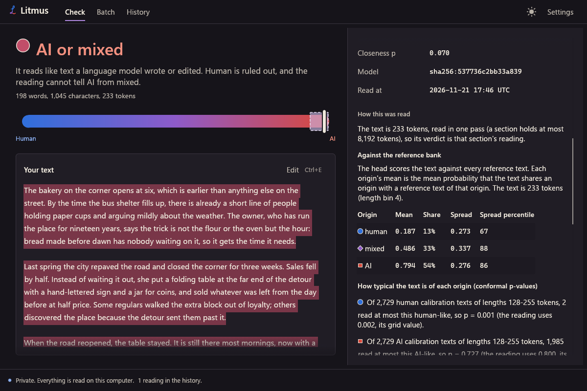
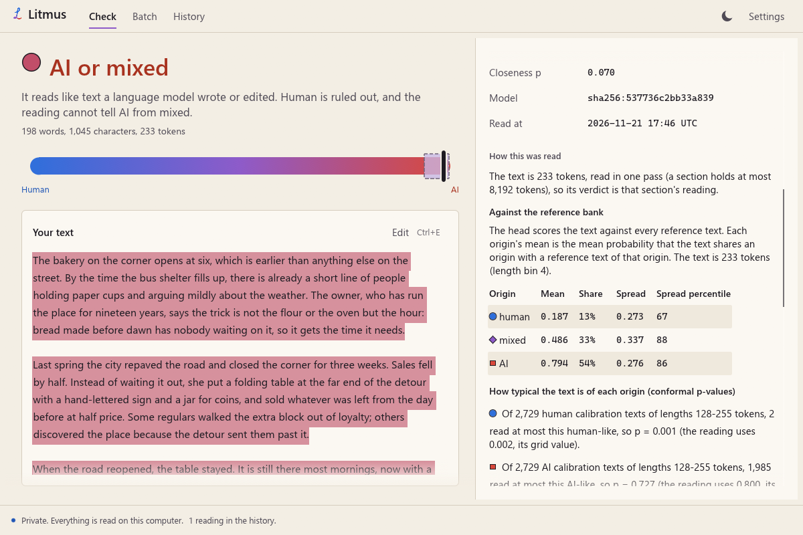

Reading a result
A reading is evidence about where a text came from, never proof of who wrote it. Every reading says what it cannot rule out and gives its chance of AI with a range, so that nobody has to take one number on faith.
If a reading will affect a person, a grade, a job, or a publication, we recommend reading our recommendations first.
The verdict
The verdict names the origins the reading cannot rule out at the 10% level (how).
| Verdict | Not ruled out | What it means |
|---|---|---|
| Human | human only | AI and mixed are both ruled out; the text reads like the human reference texts. |
| AI | AI only | Human and mixed are both ruled out; the text reads like text a language model wrote. |
| Mixed | mixed only | Human and AI are both ruled out; the text reads like text a person and a model both wrote or edited. |
| AI or mixed | AI and mixed | Human is ruled out; the text reads like text a language model wrote or edited, and the reading cannot tell whether the model wrote all of it or part. |
| Uncertain | human and one or both of the others | The evidence cannot rule human out, nor separate it from the origins named beside the word. |
| Unlike reference | none | The text resembles none of the reference texts closely enough for a call, so the verdict names no origin. |
A reading also says whether the text is called not human at the stricter 5% level and at 10%. "Not human" means AI or mixed. The 5% call makes fewer false flags than the 10% call, at the cost of catching less.
The strip, the mark, and the band
The strip runs from human (blue, at the left) to AI (red, at the right). The mark sits at the reading's chance of AI, so the picture and the number say the same thing. A mark near an end is a confident reading, and a mark in the middle means the reading cannot tell.
The pale, dashed band is the chance's range, which is how far that chance moves from one kind of text to another. The same reading means a somewhat different chance in a forum post, a news story, or a program, and the band covers that. It is short near either end, where another kind of text changes little, and wide in the middle, where it changes the most. A long document read in several sections has a wider band still when its sections disagree.
Only human remains. The chance of AI is low, so the mark sits near the human end and its band stays there.
Only AI remains. The chance of AI is high, so the mark sits near the AI end.
Only mixed remains. A model writing or editing part of a text counts toward the chance of AI, so the mark of a mixed text usually sits toward the AI end, and the word says which.
Human is ruled out, and AI and mixed both remain. A model wrote or edited the text as far as the reading can tell, and it cannot say whether all of it or part.
AI is ruled out, but human and mixed are not. The mark sits between the ends, and the band crosses the middle: in another kind of text the same reading could lean either way.
Nothing is ruled out, and the mark sits near the middle. A short text can read this way, because a few words carry little evidence.
A long document whose sections disagree. Its range is wider than one text's, and the band shows how far the chance could reasonably move.
Every origin is ruled out, so the strip is washed out with a question mark and has no band.
More detail: two ways to be unlike the reference
A text's set can be empty, as above, or the text can sit farther from its nearest reference texts than 99% of calibration texts of its length, which the reading flags whatever its verdict. Either way the strip is drawn washed out. Such a text is outside what Litmus has seen, perhaps in a language, a format, or a style of model it has little reference for, and its numbers describe it less well than they describe texts like the calibration set.
The chance of AI and its range
A reading gives the chance of AI, which is how likely it is that a language model wrote or edited some of the text, taking a text to be as likely human as not before it is read. It is calibrated on texts of about the same length and comes with a range in parentheses, as in 50% (19-81%).
The range is there because the same reading does not mean the same chance in every kind of text. Human forum posts, news stories, and programs score differently from one another, and so does the text of one model and another. We measured how far the chance moves from source to source across 37 human sources and 75 AI and mixed sources of calibration text. The range is wide enough to hold the chance for 90% of the pairings of one human source with one AI or mixed source, which comes to 4.2 times the odds in either direction. It also holds the smaller uncertainty of the calibration itself, and it widens when the sections of a long document disagree.
Because the range is a distance in odds, it is short near the ends and wide in the middle.
| Chance of AI | Its range |
|---|---|
| 5% | 1% to 18% |
| 20% | 6% to 51% |
| 50% | 19% to 81% |
| 80% | 49% to 94% |
| 95% | 82% to 99% |
| 99% | 96% to 99% |
We recommend reading the range before the number. A chance of 80% (49-94%) leans toward AI and could still sit near even odds in another kind of text. A chance of 99% (96-99%) leaves little room to move. The range holds for sources like the ones in the calibration set, so a kind of writing or a model unlike all of them can fall outside it.
More detail: why even odds
The calibration texts are not an even mix of human and other texts, so the probability the calibration gives leans toward whatever most of them are. The chance of AI divides that lean out. It is what the same evidence says about a text that was as likely human as not beforehand, so a reading that learned nothing sits at one half. If you know more about your own texts, for example that nearly all of them are written by people, the chance for them is lower than the one shown.
What the levels promise
Among human texts like the calibration texts, at most 5% are called not human at the 5% level, and at most 10% at the 10% level. If you check 100 human essays of the kind Litmus was calibrated on, on average up to 5 can be called not human at the 5% level, by design. That is the price of making any call at all, and the main reason a call is evidence rather than proof.
The promise holds for texts drawn like the calibration texts, from the same kinds of sources, formats, languages, and models, so a text far from that mix can be flagged more often. It bounds false flags and says nothing about how much AI text is caught. Nor does it say how likely a flagged text is to be AI: where nearly everything checked is human, a large share of the texts flagged can still be human.
Short texts, and languages other than English
Short texts are less reliable. A sentence or two carries little evidence, so the chance stays nearer the middle, and a short text can read Uncertain where a longer one would not.
This release is an English detector. Almost all of the text it learned from was English, it was tested mainly on English text, and other languages are not supported yet, so a reading of text in another language says little about where it came from.
Long texts and the heat map
The tint over your text shows where the reading changes. Each cell covers 128 tokens and takes its color from the strip's scale, blue where that part reads human, red where it reads AI, and purple where it reads mixed or in between. The map shows where to look, and the verdict decides: a document's verdict comes from its chunks, never from its most extreme passage, because the most extreme of many looks at one text is extreme partly by chance.
When one part of a long document reads clearly as AI and another clearly as human, the reading also reports a mixed document and says which parts.
Seeing how a reading was made
At the Full detail level, every reading shows the numbers it was made from, so that you can check it rather than trust it: for each origin, the count behind its p-value in words such as "of n human calibration texts of this length, k read at most this human"; the five reference texts nearest to yours, by source, generator, domain, format, and language, though never their text; and for a long document, each part's own reading.


Our recommendations
What you do with a reading is your own decision. A reading is one piece of evidence, and these are our recommendations for using it well.
- We recommend not using a reading alone to accuse anyone or to make a decision about a person.
- We recommend weighing a reading beside what it cannot see, such as drafts, version history, the writer's other work, and a conversation with the writer.
- We recommend reading the verdict and the chance of AI together, and the chance's range before its number, treating an Unlike reference reading as no evidence either way, and treating an Uncertain one as evidence only about the origins it rules out.
- We recommend the 5% call over the 10% call when a false flag would be costly, remembering that even the 5% call flags some human text.
- We recommend extra caution with a short text and with text in a language other than English, where a reading is less reliable.
- If you act on a reading, we recommend showing the person what it said and the numbers behind it, which every reading can display.